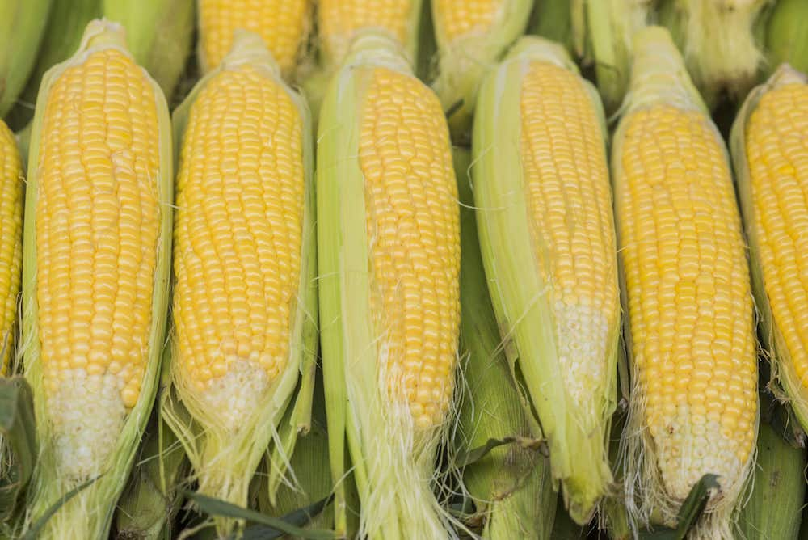
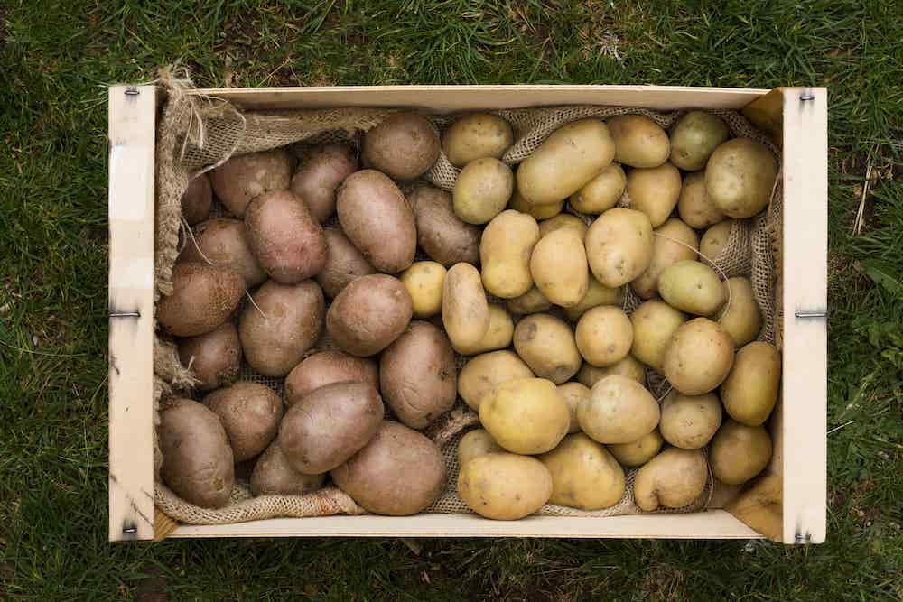
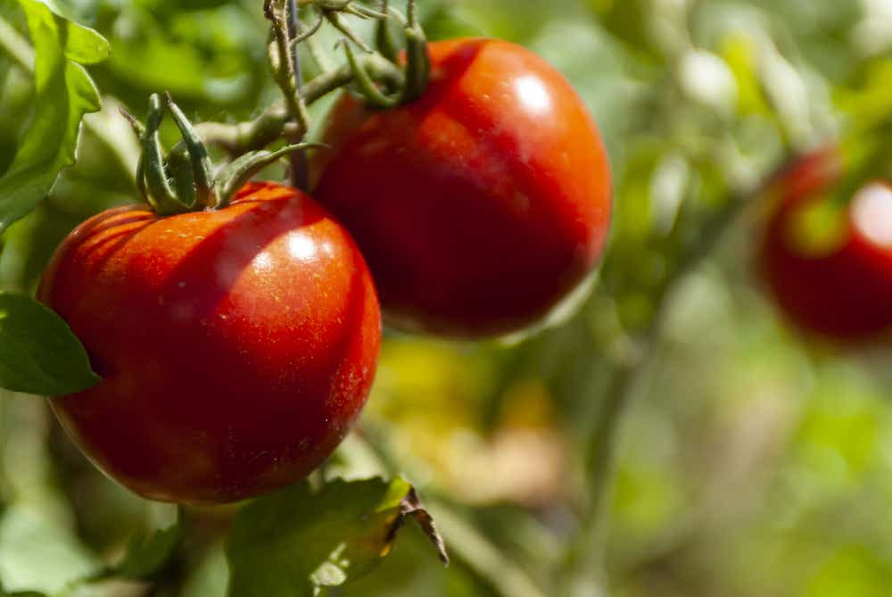

Organically Grown Vegetables
Can't-Put-Down Corn
Our corn is one of our most popular vegetables! Not only is it a nutritious vegetable packed with vitamins and minerals, but its versatility also makes it an excellent choice for any meal.
Our corn is one of our most popular vegetables! Not only is it a nutritious vegetable packed with vitamins and minerals, but its versatility also makes it an excellent choice for any meal. Enjoy the sweet flavor - we guarantee you won't be disappointed! Buy your corn today and enjoy the natural taste of delicious vegetables grown with love. Don't miss out on this opportunity to elevate your meals with a nutritious and delicious vegetable. Visit us today for all your vegetable needs! Our selection of vegetables is sure to please everyone in the family. Come get your fresh vegetables today - you won't regret it!
Nutritious Potatoes
Potatoes at Andrew's Orchard are second to none. We grow all of our vegetables ourselves and these potatoes are non-GMO, completely organic and bursting with flavor.
Potatoes at Andrew's Orchard are second to none. We grow all of our vegetables ourselves and these potatoes are non-GMO, completely organic and bursting with flavor. They have a high water content and have a great shelf life for storage. Our potatoes are perfect for baking, boiling, mashing or roasting as they hold their texture when cooked and provide delicious meals each time you prepare them. Not only are they fresh, but they also provide essential vitamins and minerals your body needs to stay healthy. We believe in providing quality vegetables that nourish your body without compromising taste! Try them today for a product you can trust!
Juicy Tomatoes
Tomatoes from Andrew's Orchard are of the highest quality vegetables you can find. Our tomatoes are grown without any genetically modified organisms, so you can be sure that you’re getting the freshest and safest vegetables available.
Tomatoes from Andrew's Orchard are of the highest quality vegetables you can find. Our tomatoes are grown without any genetically modified organisms, so you can be sure that you’re getting the freshest and safest vegetables available. The tomatoes from our orchard have a bright and juicy flavor that comes from the naturally rich soils they grow in. Plus, they're harvested daily to ensure maximum freshness. Whether it's for cooking up a delicious home-cooked meal or adding some extra pizzazz to your favorite salad, our tomatoes will give you just the taste you need! So come shop with us at Andrew's Orchard for the best vegetables around!